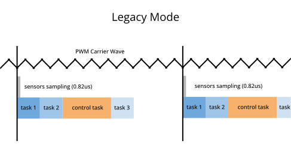
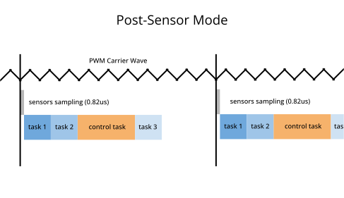
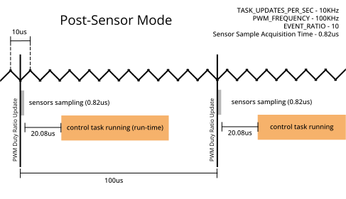
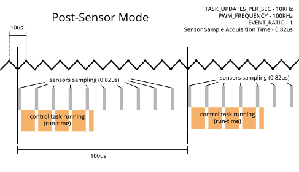
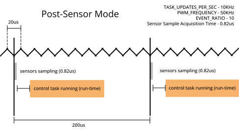
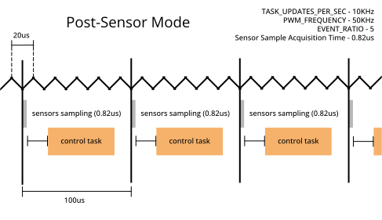

Tutorial: Timing & Sensors¶
Goal: Learn how to use the AMDC Timing Manager to synchronize task execution to sensor data acquisition.
Complexity: 4 / 5
Estimated Time: 60 min
Tutorial Requirements¶
Working AMDC Hardware
Completion of the Hardware Commands tutorial
Completion of the Voltage Source Inverter tutorial
Completion of the Profiling Tasks tutorial
AMDC firmware version 1.4 or higher
This tutorial expands on the code created in the Voltage Source Inverter tutorial and uses commands created in the Profiling Tasks tutorial. Both must be completed before this tutorial.
Introduction¶
In control applications, it is often important to be able to synchronize sensor data acquisition and control task execution with the PWM carrier. This is desirable to eliminate electromagnetic noise in motor drives (for example, switching harmonics in the phase current measurements) because the inverter does not switch at the peak and trough of the PWM carrier.
This tutorial shows how the AMDC’s Timing Manager peripheral can be used to do the following:
synchronize the start of sensor data acquisition to the PWM carrier and
guarantee that tasks are only run once new sensor data is available.
Scheduling and Synchronizing¶
The Timing Manager leverages the underlying FPGA to generate a sensor acquisition start signal (Sensor Trigger) based on the PWM carrier and an interrupt (Scheduler Interrupt) once all sensors have finished acquiring their new data sample. The AMDC scheduler will only allow tasks to run one time per Sensor Trigger signal, regardless of how frequently the tasks have requested to be run.
Timing Manager Modes¶
By default, the Timing Manager is set to Legacy Mode, in which the AMDC scheduler will start running tasks at the same time as starting sensor data acquisition (everytime Sensor Trigger is asserted).

Alternatively, when configured in Post-Sensor Mode, the Timing Manager will instruct the AMDC scheduler to wait to execute tasks until the sensor data collection is complete (when the Scheduler Interrupt occurs).

The Post-Sensor Mode guarantees that every task has access to new sensor data since the last time it was run. It eliminates a race condition between when the sensors collect their data and when the tasks start running.
Tip
In the timing diagrams above, one of these tasks is labeled as the control task. This is the task that is concerned with time synchronization of the sensor data as it is presumed to implement a control algorithm. The AMDC scheduler does not have any knowledge of this task being unique. It is treated the same as any other task. However, we are indicating it as our task of interest in this tutorial to facilitate our explanations. Later timing diagrams will only show the control task and neglect all other tasks shown above.
Key Timing Parameters¶
There are multiple parameters that affect when and how fast tasks run:
TASK_NAME_UPDATES_PER_SEC: This is set by the user in the task header file for each taskPWM_FREQUENCY: The PWM switching frequency (frequency of the PWM carrier).EVENT_RATIO: This is theUser Event Ratioof the Timing Manager.Sensor Sample Acquisition Time: This is the time it takes the slowest sensor to acquire a data sample (only relevant toPost-Sensor Mode).Total Task Run Time: The cumulative time it takes for all the scheduled tasks to run.
Read this docs page for detailed information on the Timing Manager.
Timing Configuration Rules¶
The Timing Manager initiates sensor data acquisition (Sensor Trigger) every EVENT_RATIO PWM cycles. Tasks are allowed to run, at most, one time between Sensor Trigger events. This means that the system configuration must be carefully considered to ensure satisfactory task timing.
For Post-Sensor Mode, the following three inequalities should be satisfied:
From these inequalities,
(1) must be met for the highest frequency task to ensure it can run at its specified rate of
TASK_NAME_UPDATES_PER_SEC;(2) ensures that the sensors don’t take up the entire timeslot;
(3) ensures that we are able to run all tasks in the allotted time slot.
These three combined inequalities give us both an upper and lower bound for EVENT_RATIO and PWM_FREQUENCY relative to each other.
Attention
For any tasks that must be run at precise intervals of TASK_NAME_UPDATES_PER_SEC, the right hand side of (1) must be an integer. For the critical control task (the task that requires new sensor data each time it runs), inequality (1) should become an equality:
To understand why, see Experiment 2
C-Code¶
To perform the tutorial, make the following modifications to the C code you created through the Voltage Source Inverter and Profiling Tasks tutorials.
Set the Timing Manager Mode¶
In this tutorial, we will use the Timing Manager in Post-Sensor Mode. Enable this in the user_config.h file by setting USER_CONFIG_ISR_SOURCE to 1:
user_config.h:
// Specify the source of the scheduler ISR
// Mode 0: legacy mode - scheduler is triggered based on the PWM carrier events and ratio
// of carrier frequency to desired control frequency
// Mode 1: post-sensor mode - scheduler is triggered when all the enabled sensors are done
// acquiring their data
#define USER_CONFIG_ISR_SOURCE (1)
Link the Timing Manager to Sensor Interfaces¶
We need to link the sensor interfaces we wish to synchronize with the Timing Manager. In this tutorial, we will consider only the internal ADC (analog to digital converter) of the AMDC. However, in general, this can include other sensor peripherals, such as the encoder interface and AMDS.
To link the ADC to the Timing Manager, edit the app_controller_init() function within app_controller.c to include the function call timing_manager_enable_sensor(ADC):
#include "drv/timing_manager.h"
void app_controller_init(void)
{
// Enable data sampling for ADC
timing_manager_enable_sensor(ADC);
// Register "ctrl" command with system
cmd_ctrl_register();
}
Reading Sensor Data¶
Data can be obtained from the sensor interfaces in the usual manner, irrespective of the mode of the Timing Manager. For example, the ADC can be read via analog_getf(ANALOG_IN1, &output) (see the analog input page). Note that we won’t be using the ADC’s actual numerical output in this tutorial, we’re just enabling it to activate the Timing Manager.
Reporting sensor acquisition time and sensor data staleness¶
We’re also going to add functionality to report how old the ADC data is as well as how long it took the sensor to acquire that data. We’ll add a global variable sensor_flag to indicate when the app callback function should writeout a report of the sensor timing statistics.
Add the following line to the top of task_controller.h:
extern uint8_t sensor_flag;
Add the following line to the top of task_controller.c:
#include "drv/timing_manager.h"
#include "sys/commands.h"
uint8_t sensor_flag = 0;
Edit function task_controller_callback(void *arg) in task_controller.c to add the following code at the start of the function:
if (sensor_flag) {
cmd_resp_printf("ADC time to acquire: %lfus\n", timing_manager_get_time_per_sensor(ADC));
cmd_resp_printf("ADC time since done: %lfus\n", timing_manager_get_time_since_sensor_done(ADC));
sensor_flag = 0;
}
Add the following line to the top of cmd_ctrl.c:
static uint8_t ctrl_initialized = 0;
Add a new ctrl sensor timing command to your controller app.
Edit function int cmd_ctrl(int argc, char **argv) in cmd_ctrl.c:
if (argc == 3 && strcmp("sensor", argv[1]) == 0 && strcmp("timing", argv[2]) == 0) {
if (ctrl_initialized == 0) {
cmd_resp_printf("ctrl must be initialized\n");
return CMD_FAILURE;
}
sensor_flag = 1;
return CMD_SUCCESS_QUIET;
}
Edit function int cmd_ctrl(int argc, char **argv) in cmd_ctrl.c:
if (argc == 2 && strcmp("init", argv[1]) == 0) {
if (task_controller_init() != SUCCESS) {
return CMD_FAILURE;
}
ctrl_initialized = 1;
return CMD_SUCCESS;
}
if (argc == 2 && strcmp("deinit", argv[1]) == 0) {
if (task_controller_deinit() != SUCCESS) {
return CMD_FAILURE;
}
ctrl_initialized = 0;
return CMD_SUCCESS;
}
Determine System Timing¶
We will now have you use the updated project to determine the system timing parameters and construct a timing diagram for how the Timing Manager behaves.
Re-build your project and program the AMDC.
Step 1: Determine programmed timing parameters¶
Inspect your AMDC code to determine the following critical timing parameters:
The value of
TASK_CONTROLLER_UPDATES_PER_SECintask_controller.h. From the VSI tutorial, we expect its value is set to(10000).The PWM frequency. This can be set with a hardware command
hw pwm sw, but the default value incommon/drv/pwm.his(100000.0).EVENT_RATIO. This is set incommon/drv/timing_manager.cby thetiming_manager_init()function to a default value ofTM_DEFAULT_PWM_RATIO, which is10. Later in the tutorial, we will show you how to change this value.
Step 2: Determine Sensor Acquisition Time¶
On your serial terminal, send the command ctrl init to start the controller task.
Send the command ctrl sensor timing to use your newly created functions to get the sensor timing information. Your terminal window should show a response from the AMDC similar to the following:
ADC time to acquire: 0.820000us
ADC time since done: 20.805000us
The ADC time to acquire refers to how long it took the ADC to acquire its most recent sample. This is the Sensor Sample Acquisition Time from inequality (2).
The ADC time since done is the “staleness” of the data. This refers to how long it has been since the ADC last finished a sample acquisition. This may be useful as a debugging tool when getting control code to work. Note that the value you obtain here will vary depending on the other tasks running on your AMDC.
Attention
The AMDC also has a hardware command hw tm time adc that can be used to obtain the ADC time to acquire.
Step 3: Determine the run time and loop time¶
Issue the command ctrl stats print. The AMDC should respond with approximately the following values:
Task Stats:
Loop Num: 21431 samples
Loop Min: 94.52 usec
Loop Max: 106.21 usec
Loop Mean: 100.00 usec
Loop Var: 0.02 usec
Run Num: 21513 samples
Run Min: 3.25 usec
Run Max: 3.92 usec
Run Mean: 3.40 usec
Run Var: 0.00 usec
The concepts of run time and loop time were introduced in the Profiling Tasks tutorial.
The Loop Mean is how much time there is between successive executions of the control task. It should be 1 / TASK_CONTROLLER_UPDATES_PER_SEC. And in this case it is, at 1 / 10000 seconds.
Step 4: Construct system timing diagram¶
The information obtained above can now be used to create a timing diagram. This has been done for the default values that are provided in steps 1 - 3, shown below.

We can see that we are sampling the sensors once per control task. That is because our EVENT_RATIO of 10 fits perfectly with the ratio between the PWM frequency 100 kHz and our control task’s frequency 10 kHz. This is the gold standard.
We will now experiment with changes to the parameters of the Timing Manager and observe the effects on control task timings.
Experiment 1 - Ratio is too large¶
Increasing the EVENT_RATIO above the limit of (1) will cause tasks to run at less than their desired frequency (TASK_NAME_UPDATES_PER_SEC). In this experiment, we will cause the control task to run at less than 10kHz.
Let’s increase EVENT_RATIO to 20 by putting timing_manager_set_ratio(20) in the controller_init() function. Edit app_controller.c to update this code:
#define EVENT_RATIO 20
void app_controller_init(void)
{
// Enable data sampling for ADC
timing_manager_enable_sensor(ADC);
// set User Event Ratio
timing_manager_set_ratio(EVENT_RATIO);
// Register "ctrl" command with system
cmd_ctrl_register();
}
What does this do? We’ve made it so that the sensors will collect data every 20 PWM cycles. Since the AMDC’s OS will only run tasks one time per sensor acquisition, this also means that the scheduler will wait 20 PWM cycles to run the control task.
Since our PWM_FREQUENCY is 100kHz, our sensors will collect data every 200us and our control task can only run once every 200us, instead of the 100us interval we specified in TASK_CONTROLLER_UPDATES_PER_SEC.
Rebuild and run the new program, and use the command ctrl stats print to view the loop time (after doing ctrl init).
Task Stats:
Loop Num: 26806 samples
Loop Min: 193.78 usec
Loop Max: 206.22 usec
Loop Mean: 200.00 usec
Loop Var: 0.02 usec
Run Num: 26932 samples
Run Min: 3.25 usec
Run Max: 4.23 usec
Run Mean: 3.41 usec
Run Var: 0.00 usec
Note that our Loop Mean (time elapsed between successive executions of the control task) is indeed 200 us instead of 100 us. This proves that the control task is only running at half of TASK_CONTROLLER_UPDATES_PER_SEC because the inequality (1) has been violated.
Experiment 2 - Ratio is too small¶
For control tasks (tasks which require new sensor data each time they run), (1) is expected to be an equality. We will now explore what happens when EVENT_RATIO is decreased, so that (1) is no longer an equality, but the inequalities of (1)-(3) are still satisfied.
This scenario causes multiple sensor samples to occur between each cycle of the control task which we will now show creates a race condition in the control task.
Let’s set the EVENT_RATIO to 1.
Edit app_controller.c to update this code:
#define EVENT_RATIO 1
void app_controller_init(void)
{
// Enable data sampling for ADC
timing_manager_enable_sensor(ADC);
// set User Event Ratio
timing_manager_set_ratio(EVENT_RATIO);
// Register "ctrl" command with system
cmd_ctrl_register();
}
What we’ve done now is tell the Timing Manager to sample the sensors every 1 PWM cycle.

The Timing Manager triggers the sensors to sample every PWM cycle, but the control tasks do not run every cycle. Remember that the control tasks can only run directly following a sensor sampling, but that doesn’t mean that the control task always runs after every sensor sampling. In this way, the EVENT_RATIO can only slow down the rate of control tasks, not speed them up.
Rebuild and run the new program, and use the command ctrl stats print to view the loop time (after doing ctrl init).
Task Stats:
Loop Num: 48373 samples
Loop Min: 80.46 usec
Loop Max: 119.44 usec
Loop Mean: 100.00 usec
Loop Var: 0.24 usec
Run Num: 48624 samples
Run Min: 9.85 usec
Run Max: 17.02 usec
Run Mean: 10.25 usec
Run Var: 1.40 usec
The Loop Mean has returned to 100.00 usec (the value specified by TASK_CONTROLLER_UPDATES_PER_SEC). Unlike Experiment 1, the Timing Manager is no longer slowing down the rate of the control task.
While the experiment 2 configuration doesn’t break any of the timing manager rules, it is an example of a critical task not satisfying equality (1). Users are advised to avoid this configuration because the sensor data will have inconsistent staleness.
Attention
Note that in this case, the task’s Run Mean value has increased significantly. This is a bug under review that may appear from sub-optimal timing configuration. Not all users experience this bug.
Experiment 3 - Changing PWM frequency¶
If the AMDC’s PWM_FREQUENCY is changed, the user needs to appropriately update the EVENT_RATIO to be compatible with the desired TASK_CONTROLLER_UPDATES_PER_SEC.
To illustrate this, let’s return to the situation with an EVENT_RATIO of 10, but this time modify the PWM ratio from 100kHz to 50kHz. We can do this by adding the code pwm_set_switching_freq(50000) to our init function (remember to #include "drv/pwm.h" at the top of the file).
Edit app_controller.c to update this code:
#include "drv/pwm.h"
#define EVENT_RATIO 10
void app_controller_init(void)
{
// Enable data sampling for ADC
timing_manager_enable_sensor(ADC);
// set User Event Ratio
timing_manager_set_ratio(EVENT_RATIO);
// set PWM frequency
pwm_set_switching_freq(50000);
// Register "ctrl" command with system
cmd_ctrl_register();
}
Now we’re sampling sensors every 10 PWM cycles, but each PWM cycle takes twice as long as it used to. This means that our sensors are only sampled every 200us again, which will slow down our control task rate!

Rebuild and run the new program, and use the command ctrl stats print to view the loop time (after doing ctrl init).
Task Stats:
Loop Num: 10847 samples
Loop Min: 193.82 usec
Loop Max: 206.22 usec
Loop Mean: 200.00 usec
Loop Var: 0.04 usec
Run Num: 10973 samples
Run Min: 3.25 usec
Run Max: 4.24 usec
Run Mean: 3.39 usec
Run Var: 0.00 usec
Indeed our Loop Mean is back to 200us.
We can fix this by adjusting the EVENT_RATIO ratio from 10 down to 5:
#include "drv/pwm.h"
#define EVENT_RATIO 5
void app_controller_init(void)
{
// Enable data sampling for ADC
timing_manager_enable_sensor(ADC);
// set User Event Ratio
timing_manager_set_ratio(EVENT_RATIO);
// set PWM frequency
pwm_set_switching_freq(50000);
// Register "ctrl" command with system
cmd_ctrl_register();
}
Now we’re sampling sensors every 5 PWM cycles. Since each PWM cycle takes 20us, that means our sensor sampling and control task will run every 100us once again.

Rebuild and run the new program, and use the command ctrl stats print to view the loop time (after doing ctrl init).
Task Stats:
Loop Num: 27497 samples
Loop Min: 93.69 usec
Loop Max: 106.35 usec
Loop Mean: 100.00 usec
Loop Var: 0.02 usec
Run Num: 27748 samples
Run Min: 3.25 usec
Run Max: 3.84 usec
Run Mean: 3.39 usec
Run Var: 0.00 usec